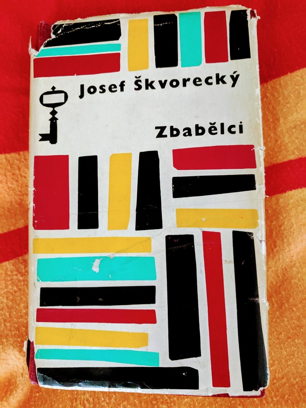
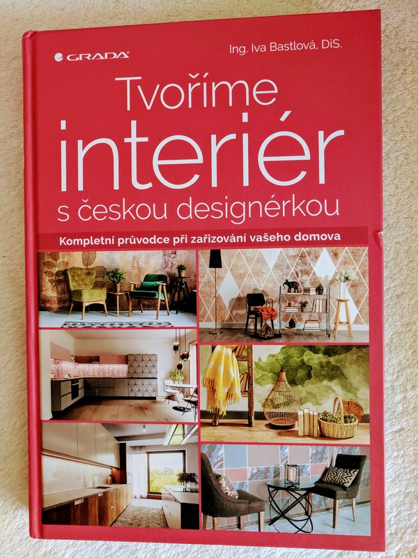
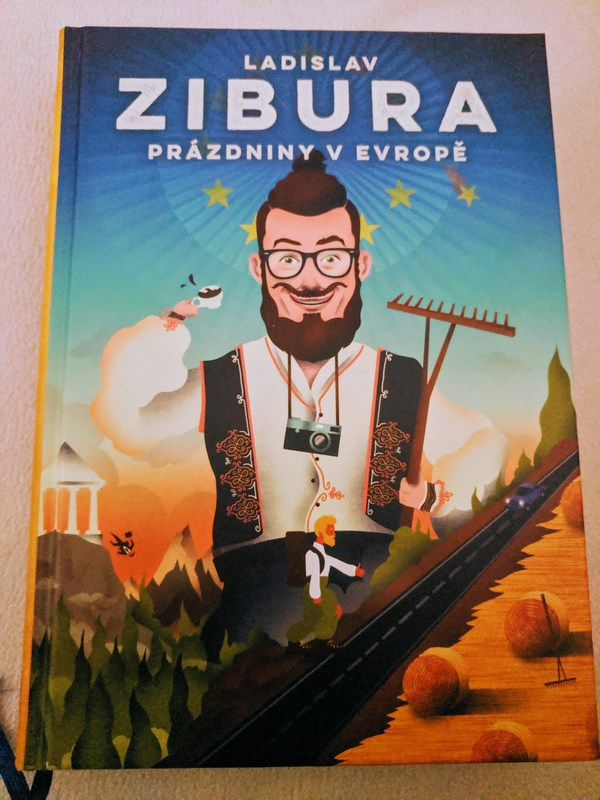

Byť tohle jaro chvilkám s knížkou mimořádně přálo, brány knihoven zůstaly zavřené, a tak jsem musela sáhnout pro čtivo do naší domácí knihovničky. Naštěstí i v ní je stále co objevovat :-)
Josef Škvorecký - Zbabělci
To všechno, co jsem prožil, bylo hezké a šťastné. To, co jsem zrovna žil, ta lítost a zoufalství, v němž jsem vězel, bylo blbé. Ale sotva jsem to prožil, už to bylo krásné. Takové to bylo vždycky. Věděl jsem to. Věděl jsem to zatraceně dobře, že člověk nemůže být nikdy šťastný, protože štěstí je skrz naskrz věcí minulosti.
Další dědictví po stěhování našich sousedů 8-) Od Škvoreckého mě ještě nikdy nic nezklamalo a Zbabělci jsou z mé dosavadní čtenářské zkušenosti absolutní top. Dokonale vykreslená atmosféra posledních dnů druhé světové války na maloměstě, jazz na pozadí, uvěřitelné charaktery a především odzbrojující upřímnost hlavního mladého hrdiny, který se stane účastníkem “revoluce” tak trochu z frajerství, náhody i nešťastné lásky, dělá ze Zbabělců mnohem víc než jen položku na seznamu povinné četby k maturitě. Myslím, že kdyby se mi tahle kniha dostala do rukou někdy v těch osmnácti, v mnohém bych se s Dannym ztotožnila. Geniální debut, který právem ve své době vzbudil u soudruhů pohoršení, a během let nezestárnul ani o píď. Moc doporučuji!

Ing. Iva Bastlová, DiS. - Tvoříme interiér s českou designérkou
Ne že by byl interiér právě na pořadu dne, ale přece jen už se pomalu posouváme na cestě za našim vysněným hnízdem. Touto knihou, kterou jsem dostala k Vánocům, se mě Péťa snažil namotivovat k samostudiu :)) Pro naprostého laika je tento průvodce myslím dobrou volbou, protože obsahuje skutečně ucelené praktické informace a konkrétní tipy při zařizování interiéru. Kniha je přehledně rozčleněna na několik kapitol dle typu místnosti a vždy ji prochází velmi zevrubně z hlediska vybavení, osvětlení, možných materiálů včetně jejich výhod či nevýhod i finanční náročnosti. Nedozvíte se zde žádné převratné tajné tipy ani nic, co by se nedalo zjistit někde na internetu, ale zase tu máte všechny ty informace v jedné publikaci, což je rozhodně plus. Jediné, z čeho jsem dost rozpačitá, je to, že na mě kniha působila jako reklamní katalog. Čekala bych, že když je autorka známou českou interiérovou designérkou, bude kniha obsahovat fotografie jejích realizovaných interiérů, místo toho je ale plná reklamních fotografií sponzorů knihy 8-) Proto na mě i různá doporučení nepůsobí úplně věrohodně a vnímám je víc jako reklamu. Kalkulace rekonstrukce s možností financování úvěrem od Buřinky už je jen taková trochu trapná tečka 8-) Nemůžu říct, že by Tvoříme interiér nebyla informačně přínosná publikace, nicméně pokud už máte o svém interiéru velmi konkrétní představu, asi si spíš informace pozjišťujete z jiných zdrojů.

Ladislav Zibura - Prázdniny v Evropě
Stejně jako má Sisyfos svůj kámen, já mám svou samotu. Není veselá ani smutná, vřelá ani chladná, náročná ani snadná. Je to jen stav věcí. Samota je však jediná jistota mého života, která není závislá na ostatních lidech. Zůstane se mnou až do smrti. Proto ji objevuji, abych zjistil, kdo vlastně jsem.
A na závěr druhý knižní dárek od Ježíška a další publikace od prince Ládíka do mojí sbírky O:-) Četbu jsem si mimořádně užila už proto, že pro letošek asi bude cestování do většiny vysněných destinací naprosté tabu, a tak jsem s Láďou cestovala alespoň vduchu. Díky knize jsem si našla spoustu nových cílů a míst, kam bych se jednou ráda podívala. Dlužno říct, že i v Evropě je ještě celá řada turisty “neobjevených” pokladů a možná je chyba, že nás to často táhne někam do dálek spíš než na odlehlá místa našeho kontinentu. Co u pana Zibury nikdy nesmí chybět, je dobrý humor i trocha toho filosofování, díky němuž se s ním ráda vydám na stránkách jeho další knihy třeba světa kraj :D
